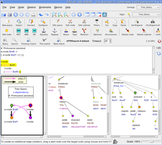

This distribution contains an implementation of a PML-TQ search system for linguistic TreeBanks.
The system requires the treebank to be encoded in (or convertible to) the PML format.
The system uses a client server architecture (CGI + small custom HTTP server + SQL database backend) and provides a command-line and a simple web-based search client.  A graphical client for PML-TQ is part of the tree editor TrEd, which is a GPL-licensed software available separatelly.
TrEd also contains client-side PML-TQ search engine, allowing the users to use PML-TQ queries on their local data.
Current version is 0.5 (alpha)
This realease is ready for testing, but some parts of the documentation and are still missing.
pmltq.tar.gz - PML-TQ distribution package
This software is published under GPL (General Public License).
Subdirectories:
config - sample configuration files (must edit first!)
contrib - sample conversion scripts (e.g. for PDT 2.0)
doc - documentation
libs - perl modules used by pmltq
resources - PML schemas used by pmltq
sql - SQL scripts to init the database
Scripts:
install_deps.sh - install modules required by the search server
pmltq_http - small HTTP server providing PML-TQ services
pml2base.pl - PML to SQL database conversion script
pmltq - command-line client for SQL or HTTP engine
sqlplus @ sql/init_oracle.sql
sqlplus @ sql/pml2base_init.sql
For PostgreSQL:
sqlplus @ sql/pml2base_init-pg.sql
./pmltq_http
Of course, if the client runs on a different computer than the pmltq_http server, replace localhost with hostname or IP of the server running pmltq_http.
Copyright (c) 2008 by Petr Pajas and Jan Štěpánek
The development of PML-TQ is a part of the project "Integration of language resources for information extraction from natural texts", Information Society of Grant Agency of Academy of Sciences of the Czech Republic: 1ET101120503
{kind=link}